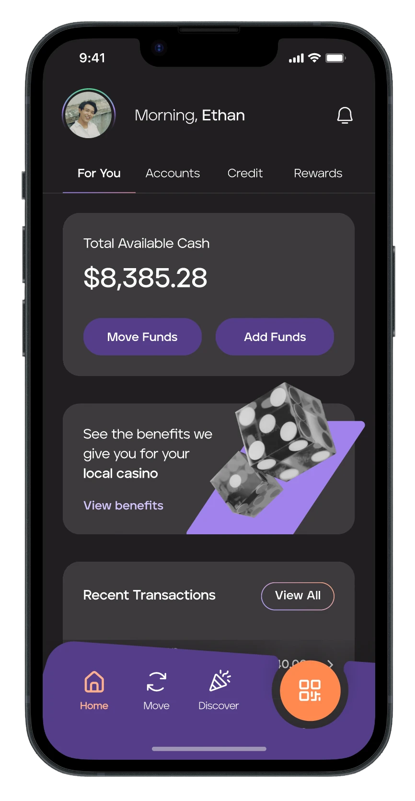
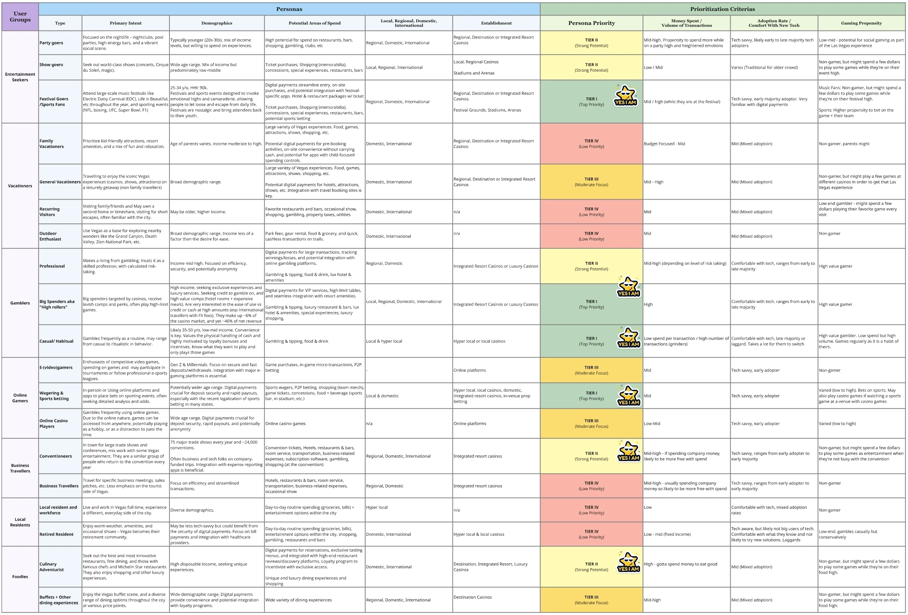
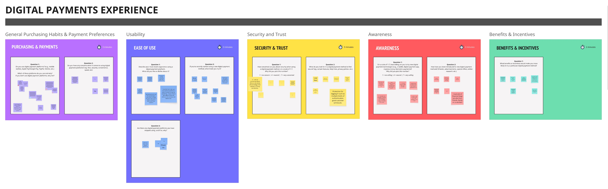
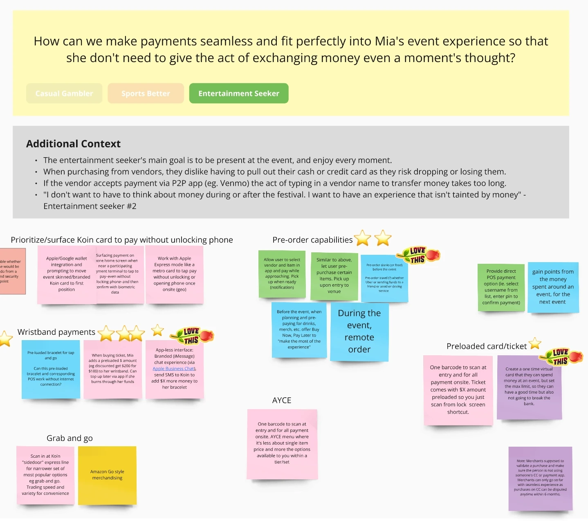
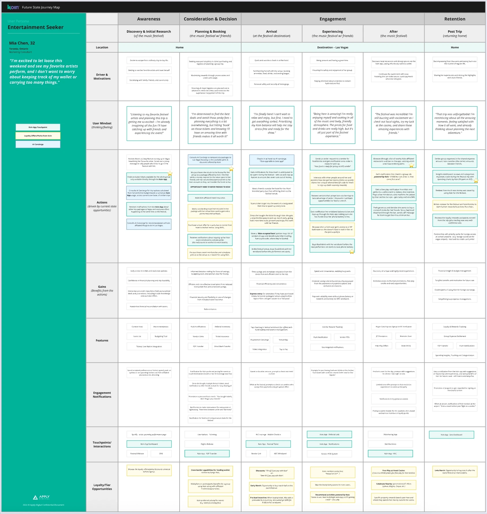

Ethan the Casual Gambler
Gambling is his main recreational activity. He uses it as a way to escape from the stressors of daily life, however, tracking and managing gambling budgets can be difficult.

Koin is a cashless payment platform specially for casino gaming. After a successful pilot, their next challenge was less clear: which new customer segments were worth pursuing, and what would actually make the product valuable enough for them to adopt.
I led UX discovery to answer that, working alongside a strategist and a product manager. Over five months, we identified and prioritized promising customer segments, mapped their existing payment behaviour, and turned the strongest opportunities into five testable product concepts. Through usability testing, I validated four of the five concepts, surfaced a wrong assumption about automated deposits, and gave the team an evidence-backed direction for the app's first development phase.
Casino gambling still runs mostly on cash. Through industry research, I discovered why: cash is private, familiar, and has a built in limit. Once the money someone brought is gone, they know to stop.
So Koin’s current solution of simply digitizing payments and making it faster wasn’t going to convince anyone to switch away from cash.
For Koin to earn adoption, it needed to offer convenience without reducing a customer’s sense of awareness and control, and it needed the right audience to offer this to. Finding this audience was the real problem to solve.
Koin's existing audience was casino gamers, but our stakeholders wanted to go broad, as many types of people could benefit from a cashless payment system. Everyone visiting Las Vegas was, in theory, a plausible user.
I knew that we could not feasibly target every single consumer group. We had to prioritize. To help with this, I built a consumer group matrix across all of the potential target markets, and listed some of their characteristics (general demographics, primary intent for visiting, spending habits, etc.). Then I set a prioritization criteria in order to give the team a strategic way to tier the market, instead of debating it by vibes.
Consumer group prioritization criteria:
As a group, we tiered the personas from Tier 1 (top priority) down to Tier 4 (low priority).

Business Travellers, Foodies, and High Rollers were groups that the stakeholders really pushed for, and the ones we ended up cutting. Business Travellers were mostly doing convention activities with everything pre-paid, and would likely be too tired to gamble after a long day of networking. Foodies were there for food and shopping, and had vastly different needs. High Rollers wanted high-touch services and had their money logistics established, so a digital payment app wouldn't serve them well. I had to make the case for narrowing the focus now and branching out later, rather than trying to build a shallow product for everyone at once.
That left the following three Tier 1 consumer groups:
Gambling is his main recreational activity. He uses it as a way to escape from the stressors of daily life, however, tracking and managing gambling budgets can be difficult.
Betting on games makes his viewing more interesting and engaging. He wants a straightforward betting process so that he doesn’t miss a good betting opportunity, and can get back to watching the game.
Loves participating in live events to soak in the atmosphere. She looks for the easiest and quickest ways to get what she needs, so that she misses as little of the experience as possible.
To pressure-test these hypothesis personas, I created three online consumer workshops (one workshop per consumer groups, five participants each) to better understand these persona’s relationships with gaming, entertainment, and digital payments.
From the workshops, I synthesized the data and developed customer journey maps in order to better visualize and understand each persona’s current journeys when interacting with their chosen entertainment, including pain points and moments of delight.

Using these maps, I asked three questions of each persona's current-state journey: what friction could we remove, what delight could we amplify, and where was there room to create something new? That produced the following five opportunity areas:
Groups of friends pool money for shared costs (rooms, meals, etc.) and trust each other to settle up later. There’s real risk if someone doesn’t pay their share.
Entertainment seekers want to maximize their trip while minimizing costs, so they actively hunt for discounts and perks.
Long lines to place bets or buy food and merch mean people miss parts of the event they came for.
Slow cash-outs, slow account funding, and juggling cash or cards mid-event all pull people out of the moment. As one entertainment seeker told us: "I don't want to have to think about money during or after the festival. I want to have an experience that isn't tainted by money.”
After an event, the energy is still high and people want to keep the fun going at nearby restaurant, bars, and entertainment, but nothing in the current experience helps them do that.
Using the five opportunity areas, I facilitated an ideation workshop with the team. This workshop was built around "how might we" prompts tied to each opportunity area. The team placed ideas for solutions and app features under each HMW, and voted on favourites. From there, I translated the strongest ideas into future-state journey maps that show what each persona's experience could look like with the new features in place.


As a team, we narrowed the new features outlined in the future-state journey maps to five product concepts that we could test and validate, in hopes of including them in a first release of the Koin app. These concepts were prioritized by expected impact, technical effort, and whether other competitor products already solved for that moment (which I checked for through a competitive audit of the digital payment landscape).
Working with the product designer, I turned these concepts into user flows and wireframes. Then working with the UI designer, we brought those to high-fidelity, clickable prototypes.
We tested the prototypes with 10 users (five sports bettors, five entertainment seekers, balanced gender split, ages 22–60) in one-hour, one-on-one sessions, to see whether the concepts resonated, and whether people could actually complete their intended tasks.
Other payment apps people had used, like Venmo, were seen as doing only one thing. Koin felt like it could be a one-stop shop for all of their payment and entertainment needs.
This was the biggest miss. We assumed automating deposits into a sports betting account would feel convenient, but it directly conflicted with what we had learned back in our discovery: people want to be fully aware of and in control of their money to make informed decisions. Auto deposits could leave them with more money in a gambling account than they intended, increasing risky spending habits.
Testers were impressed by the concept, but because it wasn't an established mental model yet, they needed more guidance and onboarding than we had built into the prototype.
Sending or requesting money in the app made people anxious. They wanted more points of confirmation along the way to feel assured and in control.
Through usability testing and synthesis, we validated that 4 of the 5 concepts resonated with users. The fifth concept (auto deposit) came with clear evidence for why it needed rethinking rather than shipping as is. That gave the team a scoped, evidence-backed foundation to move from an open "who else could we serve" question into the app's first development phase.
My part of the engagement ended at this point, so I can't speak to what happened after. However, I felt confident that the direction that I handed off was grounded in real testing, not assumptions, and that my work was the foundation for the next phase of the product’s development.
The hardest part of this project wasn't the design work, it was the scoping conversation. Stakeholders wanted to pursue nearly every type of visitor to Las Vegas, and I had to make the case, with evidence, for starting narrow and expanding later, including telling them directly why some of their preferred target groups weren't the right fit yet.
Underneath that was a harder truth I had to keep coming back to: a digital payment product isn't automatically solving an urgent problem for most people, since cash already works fine for a lot of the identified use cases. The real job was finding the specific moments where friction genuinely existed, rather than assuming convenience alone would drive adoption.
If I did this project this again, I would push harder for first-person research before locking in personas. We built the initial personas from thin secondary research and anecdotal input from casino operators. There wasn't much existing data on gambling or Vegas-visitor payment behaviour to draw from, so we filled gaps quickly with AI-assisted research and synthesis to keep things moving. It got us to a workable starting point fast, but I'd rather validate assumptions with real users earlier, instead of backfilling them later.
This project showed that I can lead UX through genuine ambiguity: no existing user base, thin research, and a business question ("what market next?"), rather than through a defined feature brief. It also showed that I'm strongest when facilitating cross-functional workshops (journey mapping, ideation, prioritization) that get strategy, product, and design pointed at the same target.